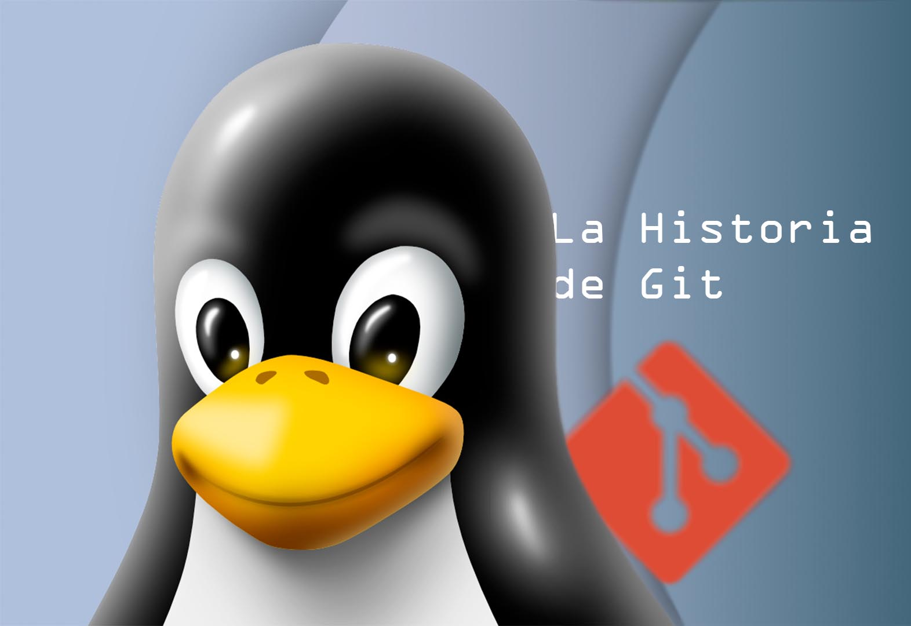

Si eres programador, estudiante de informática o de cualquier rama derivada, seguro conoces Git, el sistema de control de versiones más usado del mundo. Pero lo que probablemente no conoces sea su historia, sus orígenes y, tal vez, ni siquiera qué tan importante es realmente.
Aunque por alguna razón se le percibe como un servicio muy sencillo, la verdad es que hay una buena dosis de magia detrás de Git. Su concepción no nació de la noche a la mañana; duró unos años en gestarse, pero muy poco en desarrollarse.
Por allá por el año 2002, Linus Torvalds —sí, el mismo creador del kernel llamado Linux— se encargaba de darle mantenimiento, actualizaciones y parches a su sistema. La manera en la que lo hacía era, cuanto menos, arcaica. Simplemente recibía correos en una lista pública con archivos punto patch o punto diff. Estos eran archivos de texto plano que él insertaba en el código usando el comando patch de Unix. Luego, revisaba y compilaba manualmente. Si todo funcionaba, lo aceptaba y guardaba.
Y así lo hacía con cada aporte que recibía. Como bien sabrán, el proyecto empezó a crecer tanto que, tarde o temprano, Linus ya no pudo darse abasto. ¡La cantidad de desarrolladores aportando al kernel generaba cientos de propuestas al día!
No fue sino hasta 2005 que la comunidad de Linux empezó a usar un software comercial llamado BitKeeper. El dueño de este software permitió que los desarrolladores de Linux lo usaran de forma totalmente gratuita, pero con una condición muy específica: no intentar hacer ingeniería inversa para competir contra ellos.
A pesar del pequeño frenazo sentimental que implicaba para la comunidad del código abierto usar un software comercial y no poder hacer una versión libre, aceptaron. Al fin y al cabo, el sistema era muy eficiente y, sobre todo, rápido.
Pero poco duraría esta asociación. Ese mismo año, uno de los desarrolladores, Andrew Tridgell (creador de Samba), no se pudo resistir y decidió escribir un script de tan solo unas 300 líneas. Su meta era entender cómo se comunicaba BitKeeper para hacer un cliente libre que se conectara a sus servidores. Esto calificaba totalmente como ingeniería inversa, y no una insignificante, sino una que exponía parte esencial del proceso de comunicación del cliente con el servidor.
El dueño de BitKeeper, Larry McVoy, se enteró de esto y pasó del amor al odio en un segundo. Ese mismo día le arrebató el servicio gratuito a toda la comunidad de Linux. De la noche a la mañana, el proyecto de código abierto más grande del mundo se quedó sin un sistema de control de versiones.
Volver al caótico sistema de correos electrónicos era inviable. Había que conseguir otro administrador de versiones igual de eficiente o mejor que BitKeeper. Así que el mismísimo Linus Torvalds decidió encargarse del asunto personalmente y probó las alternativas del momento.
Primero evaluó CVS y Subversion (SVN), que eran los reyes del mercado. Pero estos funcionaban con un modelo centralizado; es decir, con un solo servidor central. Si querías ver el historial, hacer un commit o crear una rama, estabas obligado a tener conexión a internet y solicitar permiso al servidor. Era un proceso lento y, si el servidor se caía, nadie podía trabajar.
Otra alternativa fue Monotone y GNU Arch. Estos sistemas distribuidos le daban una copia de la historia completa a cada ordenador. Fueron la inspiración directa para Git, pero tenían un grave problema: el rendimiento. El kernel de Linux requería procesar miles de archivos in milisegundos, y estos programas eran desesperadamente lentos.
Al no encontrar ninguna alternativa que ofrecierea velocidad, descentralización y seguridad, Linus decidió crear su propio sistema.
En lugar de intentar hacer un control de versiones común, diseñó primero una base de datos conocida como Content Addressable File System (sistema de archivos direccionable por contenido). No tenía comandos complejos, sino miniprogramas en lenguaje C que conectabas por medio de la terminal, como update-cache, write-tree y commit-tree.
And aquí viene la parte más importante: el desarrollo de Git como tal. En internet se dice que Linus programó esta herramienta en tan solo 10 días, y en efecto, así fue:
¡Así nació Git en solo 10 días! Aunque no era la herramienta amigable que conocemos hoy, sino algo más complejo y técnico, con el paso de los meses se fue puliendo hasta llegar a los comandos actuales como git status o git checkout.
Para más inri, apenas tres meses después de esta increíble hazaña, Linus simplemente se marchó. Le entregó las llaves del proyecto a Junio Hamano, un desarrollador japonés que se convirtió en el colaborador número uno y mantenedor de Git hasta el sol de hoy, mientras Linus regresó a atender su verdadero bebé: Linux.
Mucha gente a día de hoy suele confundir Git con una plataforma web, y está muy lejos de ser eso. Git es, por completo, una utilidad de código abierto. Puedes conseguir su código fuente de forma totalmente libre, modificarlo, incorporarlo a tus proyectos o colaborar en su desarrollo.
Muestra de ello es que motores de videojuegos como Godot y Unreal Engine, editores como Visual Studio Code, e incluso la mismísima empresa SpaceX lo utilizan dentro de sus operaciones. Si eres programador o creador de juegos, seguramente has visto en tu editor líneas verdes o azules cuando añades o eliminas código. ¡Eso es Git trabajando incrustado en tiempo real!
Por esta misma razón, más adelante Microsoft se involucró de cabeza en este mundo. Sí, la misma empresa que en su momento fue el enemigo más grande del open source y que llegó a catalogar a Linux como un "cáncer", terminó adoptando estas herramientas para catapultar su propio editor, Visual Studio Code, al éxito.
Como ya dijimos, Git y GitHub son cosas totalmente distintas. En el año 2008, tres desarrolladores (Tom Preston-Werner, Chris Wanstrath y PJ Hyett) vieron una oportunidad de negocio excelente. Hasta ese momento, Git era una herramienta de consola un poco rebuscada que requería servidores propios. Lo que ellos hicieron fue crear GitHub: una plataforma web que funciona como un host fácil de usar, con interfaz gráfica y sazonado con atributos de una red social para programadores.
¿Recuerdan que mencioné a Microsoft? En el año 2018, Microsoft compró GitHub por 7.500 millones de dólares para terminar de dominar el mercado de las herramientas de desarrollo.
Y esta es la verdadera historia de Git: una sutil pero poderosa herramienta de control de datos que mueve todo el mundo de la tecnología y seguramente será así para siempre.